My vision is a forest that feeds itself and the people that nurture it.— William Thomason
What I bring to Isikhova
I'm William Thomason — a Regenerative Food Forest Planner who has spent nine years designing poison-free growing systems (aquaponics, syntropic permaculture, hugel beds). I'm looking to bring that experience to Isikhova, alongside the other work I do: building infrastructure and tree-walkways / treehouses, running adventure-camp setups and workshops & events, keeping bees, designing in Blender, producing sound journeys and retreats, and handling web development and social-media / PR quality control.
I'm self-funded (independent livelihood, solar and internet) and contribute fixed-scope professional work on the land — sharing nine years of regenerative practice plus web, IT and media skills. Collaboration on commercial endeavours on the land can be discussed on a per-project basis.
To use my hard earned knowledge of natural systems and off-grid communities to play an integral role in establishing Isikhova and Ironwood and making it an exemplary pillar of conservation and sustainability that sets an example to the world.
I will actively seek and apply for grants, or assist in the process — researching funders, writing proposals, and managing submissions to bring in funding for conservation, infrastructure and community projects on the land.
Curriculum Vitae
Digital Creativity & ESL Tutor — Richards Bay, South Africa
+27 67 177 6770 | williamgraythomason@gmail.com | LinkedIn: @willliamthomason | Portfolio: wgt-edutech.github.io/Portfolio
Founder of WGT EduTech, working to normalise gamified learning. Online tutor and digital creator: eight years teaching English to children, teens and adults, plus online guitar tuition, and hands-on practice in the tools students use — Blender, Three.js/WebGL, Canva and Photopea. Certified ESL and literacy tutor specialised in evidence-based literacy methods, differentiated instruction for students with disabilities (ADHD, ADD, Autism), and curriculum design using e-learning platforms.
English — Native | Afrikaans — Native | German — Professional proficiency | Spanish — B1 (CEFR) | Mandarin, French, Japanese — Basic
Aquaponics · Hydroponics · Permaculture · Syntropic farming · Jadam / KNF · Hugelkultur · Food forest design · Vermiculture · Compost · Seed saving · Pollinator habitat · Volunteer training · Biodynamics · Living soil
Stable high-speed internet, HD webcam, headset and a quiet dedicated workspace (20 Mbps+). Remote delivery via Zoom, Google Classroom, LMS.
Portfolio: wgt-edutech.github.io/Portfolio
Instagram: @grotally_organic, @didjiwalla
Projects
Below are the areas I want to contribute at Isikhova — from the food forest and aquaponics I already run, to buchu cultivation, the adventure camp, tree-walkways and digital craft on the horizon. Click a card in the gallery above for the full overview.
Project
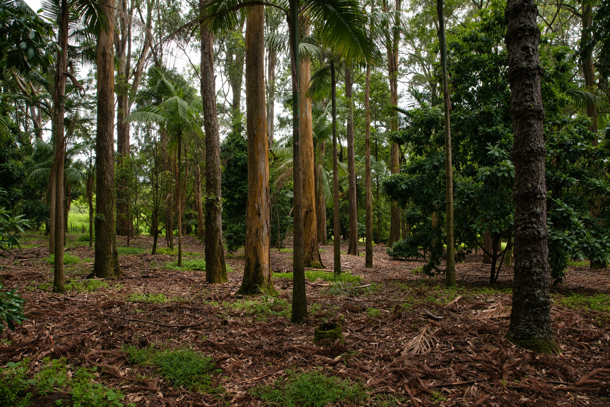
A seven-layer food forest: canopy, sub-canopy, shrub, herb, ground cover, vine and root. Living soil, native pollinators, continuous cover — a system that feeds people and improves itself year on year. Plan summary (from the food-garden plan):
Morning: check soil/moisture, inspect plants for pests, check climate systems. Afternoon: compost/worm farm, FPJ, climate control. Evening: temperature check, planting (cooler temps reduce transplant shock).
Summer (Dec–Feb): active planting and soil building. Autumn (Mar–May): soil conditioning, chop-and-drop, composting. Winter (Jun–Aug): pruning, frost protection, minimal planting. Spring (Sep–Nov): germination, succession planting, pest management.
Day 1 soil building/mulching · Day 2 pruning/chop-and-drop · Day 3 planting/biodiversity · Day 4 pest & soil health · Day 5 compost/fermentation · Day 6 monitoring/climate · Day 7 observation/learning.
Mulching and pruning; layered planting (canopy to ground cover); continuous organic matter; biodiversity and rotation. Prune no more than 30% of any plant in one pass. Lunar-calendar aligned planting (new moon: leafy greens; full moon: root crops).
Produce, nursery stock, volunteer training, agri-tourism walks, carbon/soil credits potential.
Planning estimates only — re-verify with suppliers before ordering. Labour costed at professional rates. Cost basis & verification: Builders Warehouse, Takealot, Leroy Merlin SA, local nurseries & co-ops.
| Seedlings (canopy/sub-canopy/shrub/herb/ground cover) | R 4 000 – R 8 000 |
| Mulch, compost, worm castings, biochar/rock dust | R 2 000 – R 4 000 |
| Drip irrigation starter kit + fittings | R 1 500 – R 3 000 |
| Tools (spade, fork, secateurs, wheelbarrow) | R 800 – R 1 500 |
| Labour (planting, bed prep — skilled professional) | R 0 – R 4 000 |
| Shipping to Heidelberg | R 600 – R 1 200 |
| Total | R 8 900 – R 21 700 |
Project
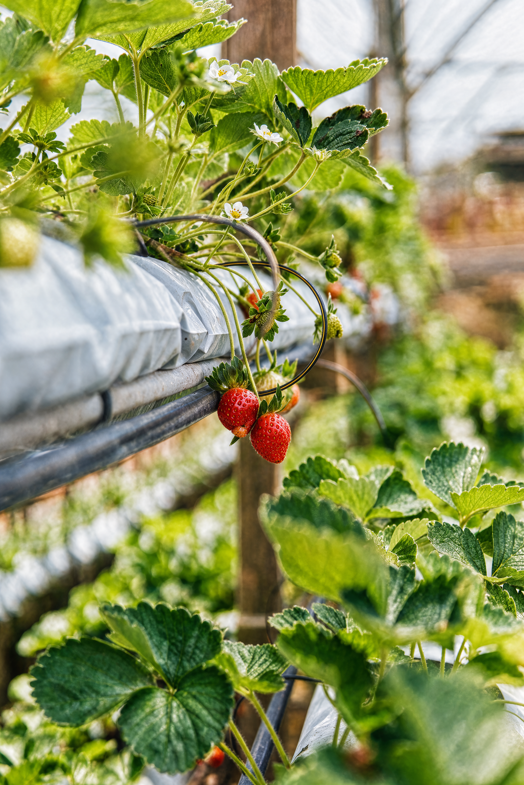
I already run a closed-loop aquaponics system at home — fish feeding plants, plants cleaning the water, no synthetic fertiliser, almost no water lost. It gives year-round greens and protein from a footprint the size of a parking bay. At Isikhova it would be the protein backbone of the food forest: a small, self-contained loop that keeps producing even in dry months.
Fish and herbs, premium salad greens, educational demos, reduced water use.
Planning estimates only — re-verify with suppliers before ordering. Labour costed at professional rates. Cost basis & verification: Builders Warehouse, Takealot, Leroy Merlin SA, local nurseries & co-ops.
| IBC/fibreglass fish tank | R 3 000 – R 8 000 |
| Pump, grow beds, plumbing | R 4 000 – R 9 000 |
| Fish stock (tilapia) + fingerlings | R 1 500 – R 3 500 |
| Netting, shade cloth, media | R 2 000 – R 4 500 |
| Testing kit (pH, ammonia, nitrite, nitrate) | R 600 – R 1 200 |
| Labour (build, plumbing, cycling) | R 2 000 – R 6 000 |
| Shipping to Heidelberg | R 1 500 – R 3 000 |
| Total | R 14 600 – R 35 200 |
Project
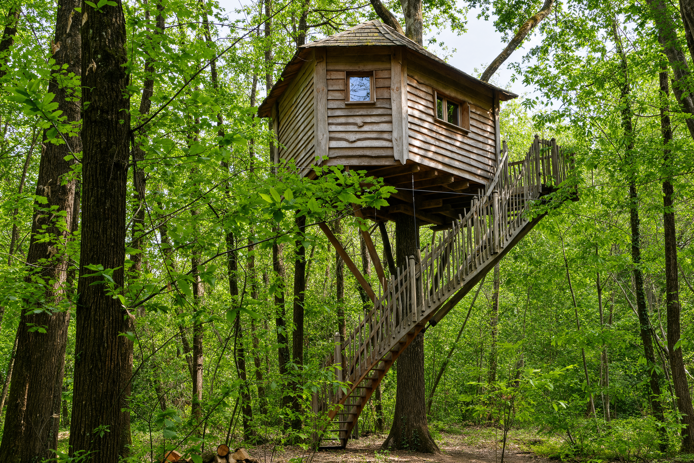
I have built tree-walkways and treehouses in natural joinery before — no heavy machinery, no concrete pads, just careful rigging and respect for the living tree. At Isikhova the idea is a light canopy walk that lets people experience the forest from inside it, with a couple of small stay-over platforms. Low-impact, reversible, and it turns the forest itself into the experience.
Eco-stay hosting, guided canopy walks, photography/location hire.
Planning estimates only — re-verify with suppliers before ordering. Labour costed at professional rates. Cost basis & verification: Builders Warehouse, Takealot, Leroy Merlin SA, local nurseries & co-ops.
| Timber (poles, planks, decking) | R 12 000 – R 28 000 |
| Hardware (bolts, brackets, cable, turnbuckles) | R 3 000 – R 7 000 |
| Safety gear (harnesses, nets, signage) | R 2 000 – R 5 000 |
| Tools (drills, saws, levels) | R 1 500 – R 3 000 |
| Labour (carpentry, joinery, install) | R 6 000 – R 15 000 |
| Shipping to Heidelberg | R 2 500 – R 5 000 |
| Total | R 27 000 – R 63 000 |
Project
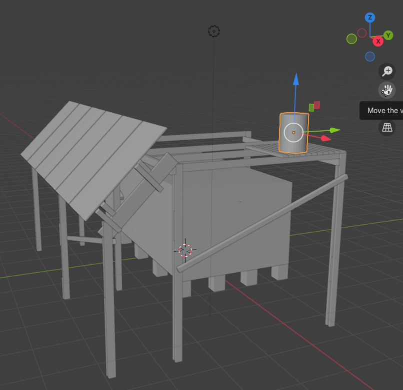
Natural building with earth, timber, biochar and harvested water is the part I enjoy most — getting hands dirty, mixing cob, fitting poles, catching rain. At Isikhova this means the practical infrastructure: water harvesting, biochar kilns, simple shelters and tool sheds, built from what the land already gives. I bring the labour and the know-how; the site brings the materials.
Durable assets, skills transfer, workshop labour.
Planning estimates only — re-verify with suppliers before ordering. Labour costed at professional rates. Cost basis & verification: Builders Warehouse, Takealot, Leroy Merlin SA, local nurseries & co-ops.
| Earth/timber/biochar materials | R 3 000 – R 9 000 |
| Water harvesting (tank, guttering, fittings) | R 2 000 – R 6 000 |
| Fixings, mortar, render | R 1 000 – R 3 000 |
| Labour (natural building, foundation, walls, roof) | R 1 500 – R 4 500 |
| Shipping to Heidelberg | R 500 – R 1 500 |
| Total | R 8 000 – R 24 000 |
Project
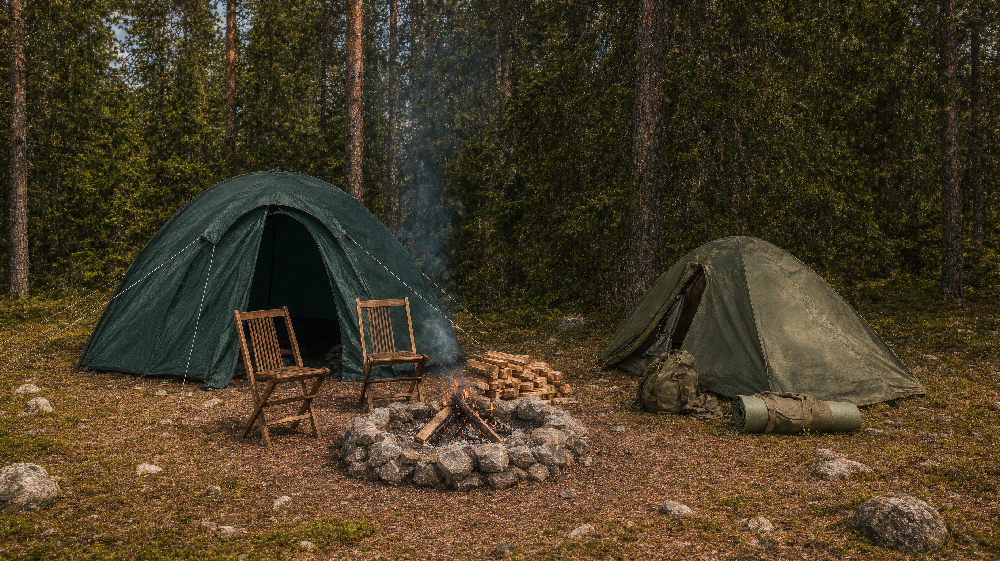
I have set up and run adventure camps before — low-impact camping, guided experiences, outdoor skills. At Isikhova the camp is how conservation pays for itself: visitors come, learn, stay, and leave the land better than they found it. It is the bridge between the forest and the people who need to see it.
Guided activities, equipment hire, events.
Planning estimates only — re-verify with suppliers before ordering. Labour costed at professional rates. Cost basis & verification: Builders Warehouse, Takealot, Leroy Merlin SA, local nurseries & co-ops.
| Camp kit (tents, shelters, cooking gear) | R 6 000 – R 15 000 |
| Signage, wayfinding, basic facilities | R 2 000 – R 5 000 |
| Tools & maintenance kit | R 1 000 – R 2 500 |
| Labour (setup, layout, trail marking) | R 2 000 – R 6 000 |
| Shipping to Heidelberg | R 1 500 – R 3 500 |
| Total | R 12 500 – R 32 000 |
Project
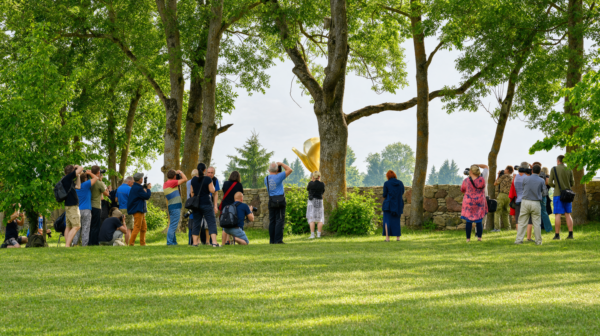
Workshops are where I am most at home — teaching permaculture, natural building, food preservation, seed saving. I have been doing this for years, and I love the moment someone gets it. At Isikhova these would be regular, hands-on days that bring the local community onto the land and turn visitors into participants.
Sponsorships, product showcase on the day.
Planning estimates only — re-verify with suppliers before ordering. Labour costed at professional rates. Cost basis & verification: Builders Warehouse, Takealot, Leroy Merlin SA, local nurseries & co-ops.
| Materials for demos, refreshments | R 800 – R 3 000 |
| Marketing (printing, signage) | R 400 – R 1 500 |
| Labour (prep, facilitation, cleanup) | R 500 – R 2 000 |
| Shipping to Heidelberg | R 300 – R 800 |
| Total | R 2 000 – R 7 300 |
Project
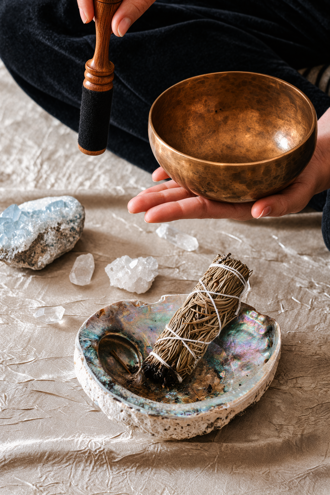
Sound journeys and retreats in the forest are the quieter half of the work — rest, reset, reconnection. I produce these myself, instruments and facilitation and the whole arc. They bring people onto the land gently, and they deepen the conservation story by making the forest something people feel, not just visit.
Sound-healing sessions, merchandise.
Planning estimates only — re-verify with suppliers before ordering. Labour costed at professional rates. Cost basis & verification: Builders Warehouse, Takealot, Leroy Merlin SA, local nurseries & co-ops.
| Instruments (bowls, gongs, drums) | R 2 500 – R 7 000 |
| Mats, cushions, blankets | R 1 000 – R 3 000 |
| Marketing & booking setup | R 500 – R 1 500 |
| Labour (facilitation, setup) | R 500 – R 2 000 |
| Shipping to Heidelberg | R 500 – R 1 500 |
| Total | R 5 000 – R 15 000 |
Project
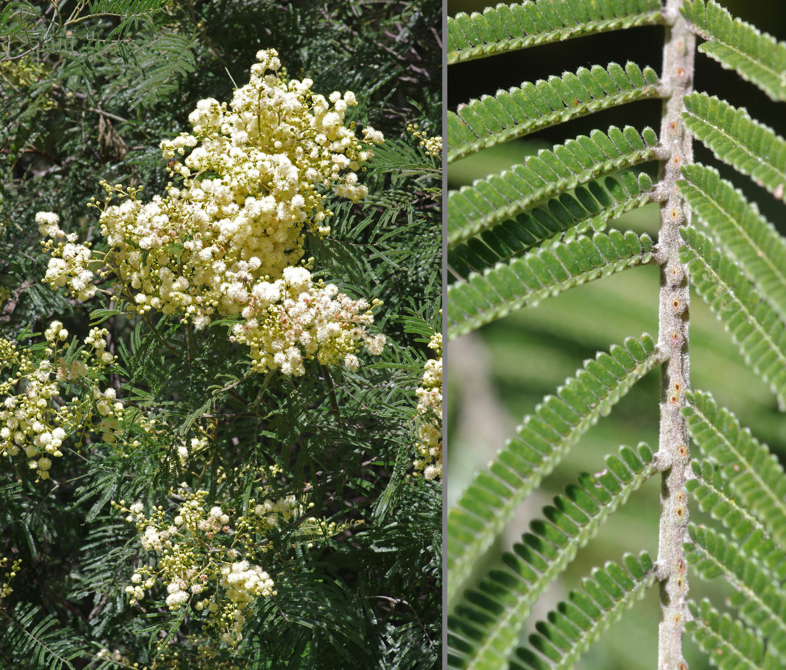
Black wattle (Acacia mearnsii) is a Category 1b invasive alien plant in South Africa. Clearing it restores water catchments, protects biodiversity and supports restoration — the harvested timber (firewood, charcoal, poles, tannin) can be used on site, and conservation funding such as the RMB Fund (which directs a share of its profits to environment and conservation programmes) is available.
Timber use (firewood, charcoal, poles, tannin bark), plus support from the RMB Fund and Working for Water for clearing and follow-up treatment.
Costs and processes are planning estimates — confirm current rates, permits and fund criteria with the RMB Fund and the Department of Forestry, Fisheries and the Environment before applying.
Planning estimates only — re-verify with suppliers before ordering. Labour costed at professional rates. Cost basis & verification: Builders Warehouse, Takealot, Leroy Merlin SA, local nurseries & co-ops.
| Tools (chainsaws, brushcutters, axes) | R 2 000 – R 4 000 |
| PPE (gloves, chaps, helmets, boots) | R 800 – R 1 500 |
| Fuel, oil, maintenance | R 500 – R 1 000 |
| Labour (clearing, treatment, follow-up) | R 2 000 – R 4 000 |
| Shipping to site (self-transport) | R 200 – R 500 |
| Total | R 5 500 – R 11 000 / ha |
Project
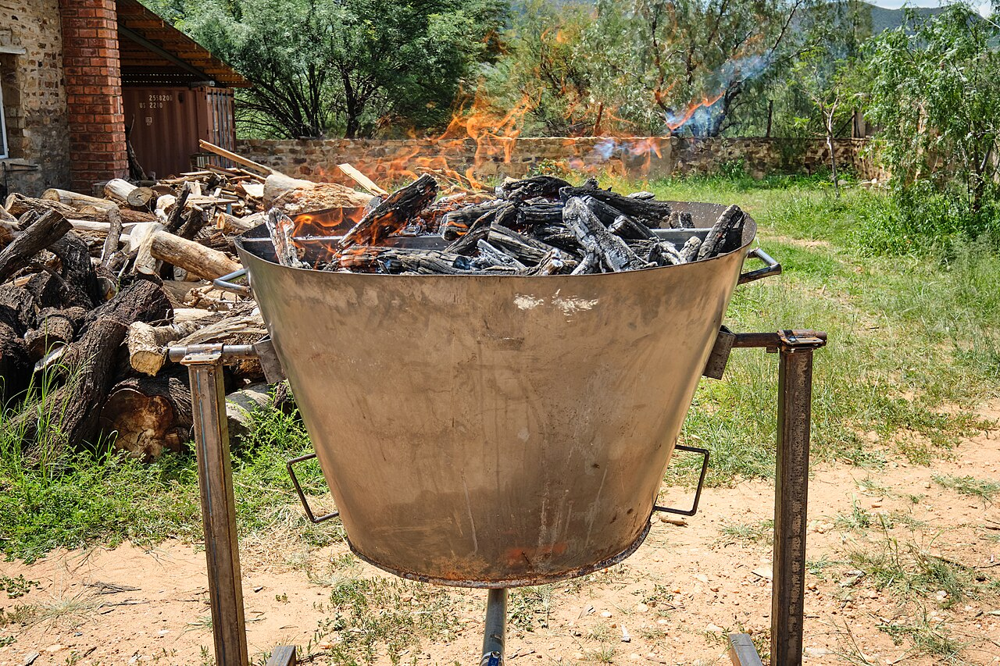
Carbon-negative soil amendment made by pyrolysis of woody biomass in low-oxygen conditions. Improves water retention, nutrient holding and microbial life in degraded soils — and locks carbon away for centuries. Produced off-grid using a flame-cap (Kon-Tiki) kiln or TLUD stove.
Soil amendment, carbon credits (future), compost enhancement, and farm productivity gains from healthier soil.
Costs and processes are planning estimates — adapt to local conditions and regulations.
Planning estimates only — re-verify with suppliers before ordering. Labour costed at professional rates. Cost basis & verification: Builders Warehouse, Takealot, Leroy Merlin SA, local nurseries & co-ops.
| Kiln materials (steel drum / cone) | R 600 – R 2 000 |
| Quench water container, crusher/hammer | R 300 – R 800 |
| Storage (bags, bins) | R 200 – R 500 |
| Labour (build kiln, burn, quench, crush) | R 300 – R 1 000 |
| Shipping to Heidelberg | R 100 – R 400 |
| Total | R 1 500 – R 4 700 |
Project
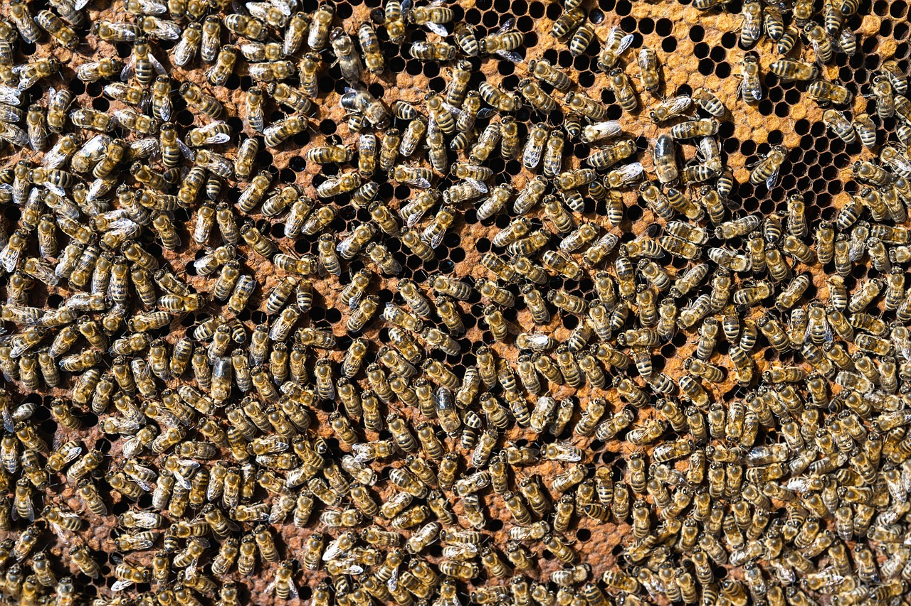
I keep bees in top-bar and Warre-style hives — low-intervention, reading the colony's health rather than forcing it. The hive does the work; I just listen. At Isikhova the bees pollinate the food forest and give honey, propolis and wax, while the colony grows through splits and swarm capture instead of bought packages.
Pollination for crops and food forest, honey and beeswax, propolis tincture, plus colony splits and swarm capture to grow the apiary.
Costs and processes are planning estimates — adapt to local conditions and regulations.
Project
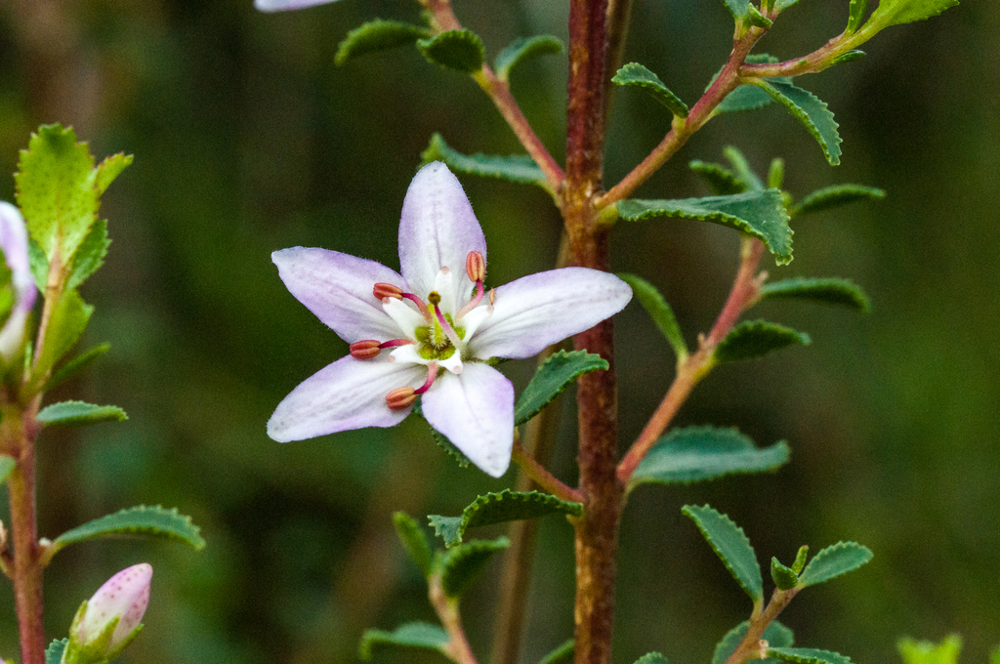
Buchu is a fynbos shrub I am drawn to — aromatic, medicinal, and it thrives in the poor, acidic, sandy soils of the winter-rainfall region with almost no inputs. Small-scale cultivation fits the Isikhova model: a crop that belongs to the land it grows on, with a real market behind it.
Essential oil and dried leaf for tea, cosmetics and traditional medicine; niche export market; supports pollinators and fynbos biodiversity.
Costs and processes are planning estimates — adapt to local conditions and regulations.
Project
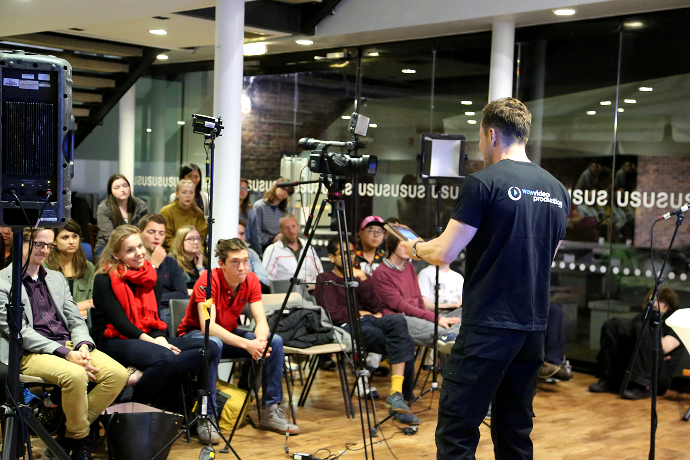
Professional digital presence for Isikhova run as a business: strategy, content calendar, and end-to-end production of photo, video and social media assets for web, fundraising and tourism. Creators put in dedicated professional hours (pre-production, production, post-production) so content can flow at the algorithm's pace instead of as a side task.
Stronger fundraising and grant applications, donor and volunteer engagement, agri-tourism bookings, and a credible public profile that attracts partners and media coverage.
Costs and processes are planning estimates — adapt to local conditions and regulations.
The journey
I want to practice regenerative farm management and permaculture design by learning more carpentry, bush craft and construction skills — and documenting the community's journey as a documentary and on social media to generate support for the trust.
Isikhova
Isikhova & Ironwood aims to live self-sufficiently and in harmony with Nature, breathing fresh mountain air in the Langeberg. That is exactly the conditions my work is built for.
I can be on the land within weeks — I'm self-funded (independent livelihood, solar and internet). If this resonates, reach out through the Isikhova community page to arrange a conversation about how I can contribute to the next season.
Tailored for Isikhova & Ironwood
Based on Isikhova & Ironwood's aim to live self-sufficiently in harmony with Nature in the Langeberg, breathing fresh mountain air — here is how my skills map to the community's needs:
Seven-layer food forest, syntropic beds and aquaponics — poison-free, year-round produce and nursery stock for the community and market.
Black wattle clearing restores water catchments and mountain veld; aquaponics reduces water use; rain/dam water harvesting for off-grid supply.
Adventure camp, tree-walkways, retreats and workshops turn conservation into engagement — supporting the trust without costing the land.
Learning carpentry, bush craft and construction on-site; documenting the community's journey as a documentary and on social media to generate support and partnership for the trust.
Land, water and biodiversity specifics should be confirmed directly with the Isikhova & Ironwood community (Langeberg, Swellendam).
Professional proposal
A formal offer of collaboration: what I bring, what I will deliver, on what terms, and how we measure success together.
I propose to join Isikhova & Ironwood as a resident land-steward and project lead: regenerative food systems, off-grid infrastructure, adventure-camp and retreat operations, and the digital presence that tells the community's story. I am self-funded and ask for no salary; my contribution is fixed-scope professional work on the land, with revenue-sharing on commercial endeavours discussed per project.
If this resonates, reach out to arrange a conversation about the next season. I can be on the land within weeks.